摧毁 Exospire
“The Exospire rising from these ruins is defiling the atmospheric 正直 of the 行星.
It is 受保护 by a force field that blocks access to its core chamber. 电磁 interference may hinder 战略配备 使用.
Breach the Exospire's defenses, and 摧毁 its core to trigger a 折叠.— 任务 Briefing
摧毁 Exospire 是一个 光能者 任务 in 绝地潜兵 2. 绝地潜兵 are tasked with extracting data from 多个 光能者 Ruins before terminating the Exospire's 能量 supply.
目标 Steps
Disrupt 防护罩生成器(s)
“An Access Node linked to the Exospire's 地下 防护罩生成器 it stationed here.
— map briefing
- 摧毁 防护罩生成器 located within the 光能者 Ruin
- Device is 受保护 by a shield and must be taken down before destroying the 发电机 itself
- Call Down Data Jack
- Defend Data Jack while it runs
- Can be destroyed in the 流程, so protecting it is vital
- If destroyed, another Data Jack must be called down
This 任务 step may be done 1-3 times depending on the 难度
结构解析
| 部件名称 | 生命值1 | 护甲值2 | 耐久2 | 主血量占比3 | 溢出上限4 | 构造5 | 致命 | ExDR6 | |
|---|---|---|---|---|---|---|---|---|---|
| Shield 发电机 |
800 | 轻型 | 100% | - | - | None | Yes | 0% | |
| Top | 500 | Very 轻型 | 0% | 100% | Yes | None | No | 100% |
Disclaimer: Each highlighted part with a count has its own 生命值. Parts without a count share 生命值 pools.
- Note: This 机械师, known as Affected By 爆炸 can only occur once per 爆炸, regardless of 100% ExDR parts hit, and the 爆炸's 护甲穿透 must match or exceed 主体护甲 to deal 伤害 对主血量. However, if the same 爆炸 has already damaged Main, this 机械师 will not trigger.
破坏异界尖塔核心
“异界尖塔矗立于此。其动力核心位于底部的地下密室中。
ALL SUBOBJECTIVES MUST BE COMPLETED FIRST— map briefing
- 摧毁暗液体电池，破坏核心的稳定性
- 摧毁 at least 148 Dark Fluid cells located in the chamber
- Dark Fluid cells housed in the wall crevices
结构解析
| 部件名称 | 生命值1 | 护甲值2 | 耐久2 | 主血量占比3 | 溢出上限4 | 构造5 | 致命 | ExDR6 | |
|---|---|---|---|---|---|---|---|---|---|
| Dark Fluid Cell |
200 | Very 轻型 | 100% | - | - | None | Yes | 0% | |
| 弱点 | 50 | 无护甲 | 0% | 100% | Yes | 50 [0/s] | Yes | 100% |
Disclaimer: Each highlighted part with a count has its own 生命值. Parts without a count share 生命值 pools.
- Note: This 机械师, known as Affected By 爆炸 can only occur once per 爆炸, regardless of 100% ExDR parts hit, and the 爆炸's 护甲穿透 must match or exceed 主体护甲 to deal 伤害 对主血量. However, if the same 爆炸 has already damaged Main, this 机械师 will not trigger.
各难度地图
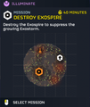
中型 难度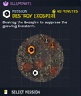
挑战 难度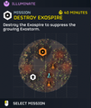
困难 难度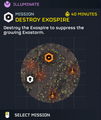
极难 难度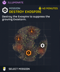
自杀任务 难度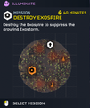
不可能 难度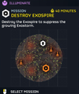
绝地潜兵难度 难度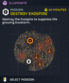
超级绝地潜兵难度 难度
媒体
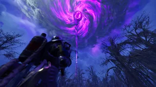
Exospire projecting itself into the 大气层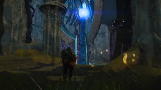
Inside of an exospire temple.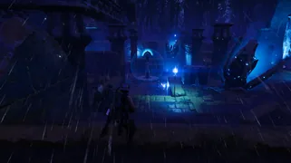
防护罩生成器 Site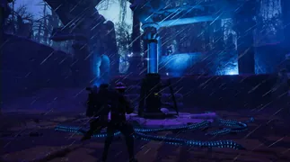
Deployed Data Jack 战略配备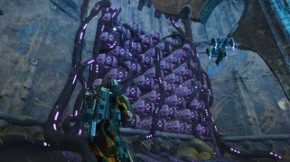
A rack of dark fluid cells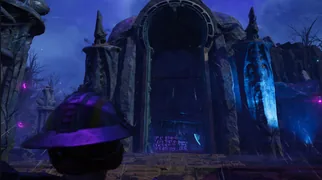
Entrance to the interior of an exospire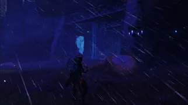
Another Core Entrance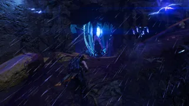
Yet another core entrance.
变更历史
1.006.100
26-03-20
(Mid-补丁)
Addition
- Added to the game.